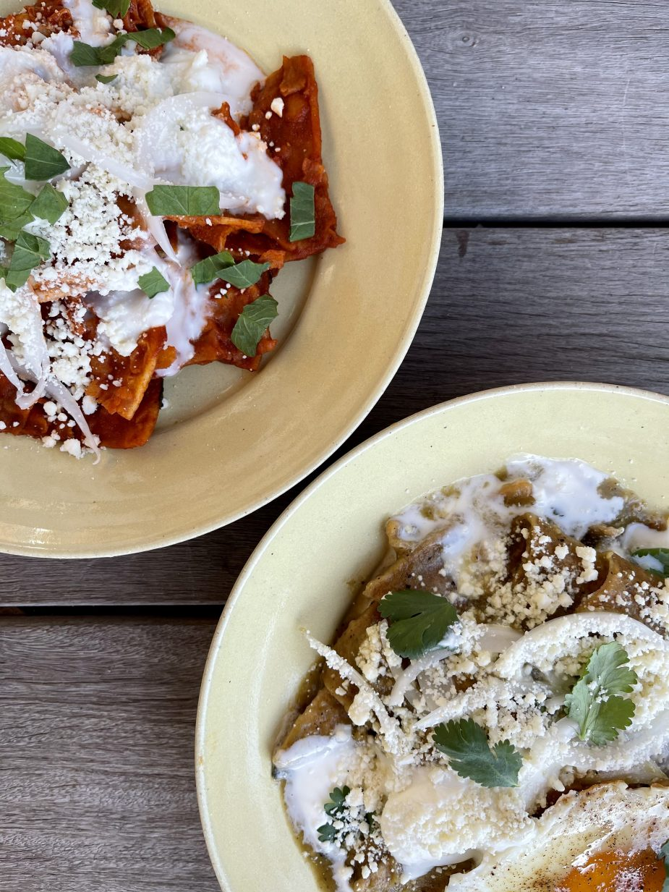

Chilaquiles

What are Chilaquiles?
Chilaquiles is a traditional mexican dish containing fried
tortilla chips and marinated in either a green or red salsa. There are various toppings
to the dish; however the most common is an egg and some type of meat protein.
If you are looking for a simple yet tasty dish, then chilaquiles is the plate to make!
Although this dish is considered more traditionally as a breakfast meal, it can truthfully be
enjoyed whenever. Don't be afraid to experiment with the toppings on this dish as it can be altered for
many pallets to enjoy. For this specific recipe it will follow with a red salsa and only the egg as a protein.
Ingredients
- 2 ounces of dried guajillo chiles
- 11/2 pounds ripe tomatoes
- 6 garlic cloves
- 2 1/2 cups chicken broth
- A bunch of cilantro leaves
- tortillas cut into strips or triangles
- Oil up to a depth of 1 inch
- 2 Eggs
Steps: Creating the Sauce
- Heat up a large skillet
- Gut the chilies and roast them individually, pressing each one to release their natural flavors and smell
- Place the cooked chilies in a bowl or hot water and use a plate to keep the chilies submerged
- Allow the chilies to rehydrate for 20-30 minutes
- Grab a rimmed baking sheet and place tomatoes and garlic on it
- Roast the tomatoes and garlic under a preheated boiler until they are blackened and soft
- Once garlic cloves are small and feel soft remove them
- Once garlic cloves are small and feel soft remove them
- Drain the chiles and scoop into a blender jar with tomatoes and garlic
- Blend until consitcency is smooth
- Press the blend through a strainer into a bowl
- On a medium-high heat skillet add oil and drop in the puree sizzle sharply
- Add ingredients all at once and cook by continous stiring, until the texture becomes a tomatoe paste
- Stir in the chicken Broth, allow to simmer for a few minutes
- Taste and season with salt, then include cilantro
- Remove from heat
Steps: Tortillas
- If moist lay the tortilla strips out into a single layer for drying
- Prepare the skillet by adding in oil to medium-high
- When hot enough make a place a strip of tortilla on the pan and fry the pieces in batches
- Use a spider skimmer (or other simmiallr product) to transfer them to a tray lined with paper towels to absorb the oil
Steps: Putting it all together
- Add 4 1/2 cups of sauce into the skillet
- Bring the sauce to a boil over the medium-high heat, then add the chips
- Stir until all chips are covered in the sauce and then turn off the heat, cover the dish and let it sit for about 4 minutes
- Uncover and stir everything together, then serve on a plate
- Garnish the plates with crema, onion slices, and cilantro
- Don't forget to add on your protein such as the egg
Home